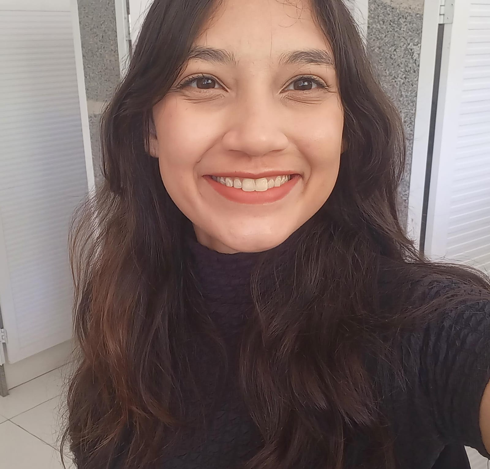

IFPI Teresina - Campus Central
20/06/2025
Sexta-feira
| Horário | Atividade | Sala | Ministrante(s) |
|---|---|---|---|
| 09h00 | Abertura de portões e credenciamento com coffee-break | - | - |
| 09h30 | Minicurso Descomplicando o Django REST Framework: Construindo APIs do Zero (Parte 1) | Lab B3-10 |
 Lais Urano
Lais Urano
|
| Minicurso Desenvolvendo honeypots com Python (Parte 1) | Lab C2-03 | Cristiano Altino | |
| Minicurso Introdução às Abordagens de Aprendizado de Máquina | Lab B3-11 |
 Ariana Cursino
Ariana Cursino
|
|
| Minicurso Visualização de Dados em Python com Google Colab | Lab B3-12 | Marcos Resende | |
| Minicurso Tornando a Qualidade parte do processo | Lab C2-04 | Lia Mariana | |
| 12h30 | Almoço | - | - |
| 14h00 | Minicurso Descomplicando o Django REST Framework: Construindo APIs do Zero (Parte 2) | Lab B3-10 |
Lais Urano
|
| Minicurso Desenvolvendo honeypots com Python (Parte 2) | Lab C2-03 | Cristiano Altino | |
| Minicurso Flask: do básico até a API | Lab B3-11 |
 Alynne Ferreira
Alynne Ferreira
|
|
| Minicurso MinIO em Python: Transformando Dados em Soluções | Lab B3-12 |
 Bruno Cordeiro
Bruno Cordeiro
|
|
| Minicurso Blockchain para Pythonistas: Do Zero ao Smart Contract | Lab B3-18 |
 Pedro Filipe
Pedro Filipe Maria do Rosário |
|
| Minicurso Performance e desenvolvimento de APIs | Lab C2-04 | Hipolito Junior | |
| 17h00 | Encerramento do dia | - | - |